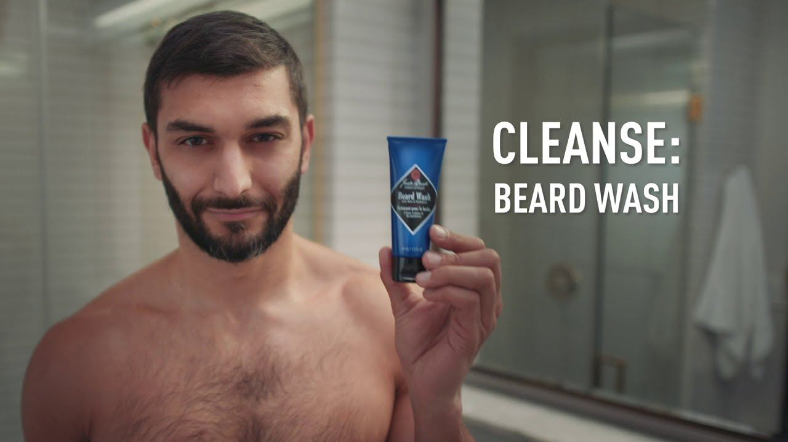

Beard Care Basics: The Four-Step Routine Every Beard Needs
A beard is not finished growing when it grows — that is when its care starts. The difference between a beard that looks deliberate and one that just happened is a short routine done in the right order: wash, condition, oil, brush. Jack Black's (@getjackblack) grooming walkthrough in the video below runs the full sequence with a complete kit. This guide breaks the routine down for any beard, at any length past the stubble stage, with the reasoning that makes the order make sense.
Steps 1–2: Wash and condition
Wash the beard two to three times a week — not daily, unless your work demands it. Beard hair is coarser and drier than scalp hair, and the skin under it produces less oil than the scalp; daily shampooing strips both into itch and flakes. Use a gentle wash, work it through to the skin with your fingertips, and rinse thoroughly — residue under a beard is a flake factory.
Condition every wash. Beard conditioner softens the coarse texture that makes beards scratchy and wild, and it is the step most men skip and most beards miss. Leave it in for a couple of minutes, rinse, and pat — never rub — dry with a towel. Rubbing tangles and frizzes; patting keeps the lay.
Steps 3–4: Oil and brush
Oil goes on while the beard is slightly damp — a few drops warmed between the palms, worked through from the skin outward. Beard oil's real job is the skin underneath: moisturised skin means no itch, no beardruff, and healthier growth. The hair softening and sheen are the visible bonus, not the purpose.
Brush last, with a boar-bristle brush if you have one, in the direction you want the beard to lay. Brushing distributes the oil evenly, trains the lay, and exfoliates the skin gently. Two minutes, top to bottom, and the beard reads as groomed rather than grown. A wooden comb handles detangling on longer beards before the brush pass.
Trim logic
Care keeps a beard healthy; trimming keeps it intentional. The two lines that matter most are the cheek line and the neckline — clean those and even a big beard looks deliberate; neglect them and even a short beard looks unfinished. Trim little and often rather than rescuing monthly, and always trim dry: wet beard hair hangs longer, and trimming wet is how beards come out shorter than planned.
That is the whole system — four steps, twice-or-thrice-weekly washing, daily oil-and-brush if your beard runs dry. Consistency at this level is what people are actually complimenting when they say a beard looks good.
Watch: How To Groom Your Beard Featuring Our Beard Grooming Kit For All Types of Facial Hair
Video: “How To Groom Your Beard Featuring Our Beard Grooming Kit For All Types of Facial Hair” by Jack Black (@getjackblack) · Watch on YouTube
Shop the gear
Everything in this guide runs on the right gear: a durag that holds compression without slipping, a cap that stays put, and fabric that treats your hair right. The durag.store launch lineup is built to that standard — dual-layer construction, long tails, and stitching made to survive the routine. Join the launch list and use code GOLDSTANDARD for 15% off your first order.
Keep learning
- Beard Oil: How Much, How Often, and the Application Most Men Get Wrong — Basic · Beard Care
- The Barber's Hot Towel Beard Wash: The Full Method at Home — Intermediate · Beard Care
- Beard Care in Cold Weather: Winter-Proofing Your Beard — Intermediate · Beard Care
Sources: Video — “How To Groom Your Beard Featuring Our Beard Grooming Kit For All Types of Facial Hair” by Jack Black (@getjackblack), youtube.com. Guide written by the durag.store Wave Lab.